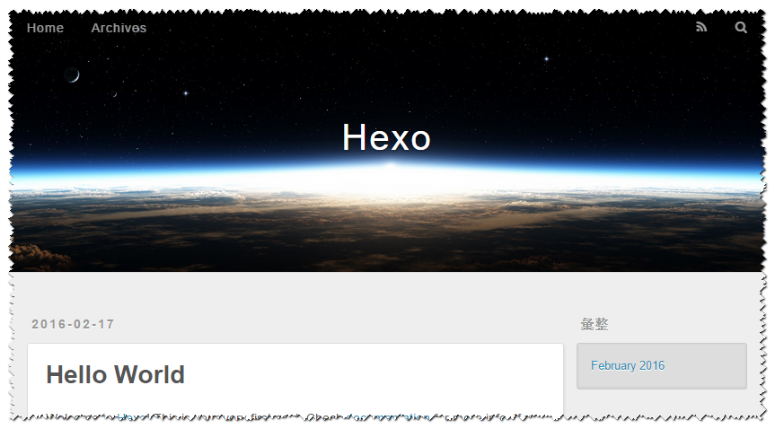
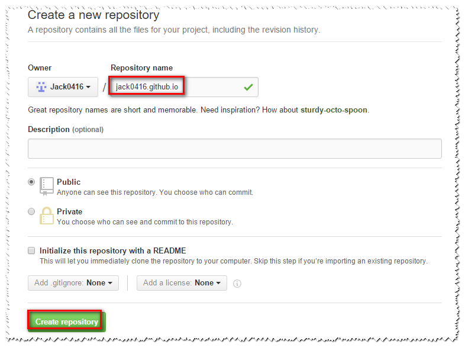

1.安装Git
Git：主要用于上传博客页面到github和命令操作
32位系统下载
64位系统下载
一直点击next即可
安装成功后打开命令窗口,输入git –version,输出版本号则说明安装成功
C:\Users\Administrator>git –version
git version 2.8.1.windows.1
2.安装Node.js
Node.js：Hexo的运行环境
32位系统下载
64位系统下载
一直点击next即可
安装成功后打开命令窗口,输入git –version,输出版本号则说明安装成功
C:\Users\Administrator>node -v
v4.4.3
3.安装Hexo
Hexo：博客程序
利用 npm 命令即可安装。在任意位置点击鼠标右键，选择Git Base。
- 输入命令：npm install -g hexo ，等待几分钟。
- 安装完成后，在电脑任意位置新建一个文件夹（如C:\Hexo，以后对博客内容的所有修改都必须在此目录下进行），然后在文件夹内点击鼠标右键，选择Git Bash，输入 hexo init ,耐心等待一会，Hexo 即会自动在该文件夹下建立网站所需要的所有文件。
- 继续输入npm install,安装所需的依赖包
最后输入npm install hexo-deployer-git –save安装将hexo博客向github上传的模块。
现在我们已经搭建起本地的hexo博客了，执行以下命令 hexo s(确保当前路径是上面新建文件夹的路径，如上面的C:\Hexo)，然后到浏览器输入localhost:4000，即可看见如下的页面（注意命令窗口不能关闭，否则看不到该页面）。

4.将本地博客上传到github
- 注册github账号，点此注册
- 创建Repository,点击右上角的+号，选择New repository，输入Repository Name，注意Repository Name要按要求填写，比如我的Github账号是jack0416，那么我应该创建的Repository的名字是：jack0416.github.io,不区分大小写：
 - 修改配置文件：到你刚刚创建的Repository下，找到仓库地址并复制。
然后打开_config.yml文件（该文件在前面新建的文件夹下，如C:\Hexo）,滚动到最下面，修改文件里面的deploy。其中的repository就改成你刚刚复制的仓库地址,修改完成后点击保存。
注意：如果：后面有内容，则冒号后面要有一个空格
5.设置SSH keys
- 在任意位置点击鼠标右键，选择Git Bash输入以下指令 ls -al ~/.sshls -al ~/.ssh，检查是否已经存在了SSH keys。
- 如果提示不存在，则输入以下指令 ssh-keygen -t rsa -C “ssh-keygen -t rsa -C “angelen10@163.com”（邮箱就是你注册Github时候的邮箱，将angelen10@163.com替换成你的邮箱即可）后，一直按回车（中途可能提示你要输入passphrase，不用理会，一直回车就行）;完成后将自动生成.ssh文件夹（一般在c盘的用户目录下），里面有id_rsa和id_rsa.pub两个文件，打开并复制id_rsa.pub文件的内容。
- 然后到Github页面，点击右上角的设置图标，选择SSH keys后点击Add SSH key，输入title和key,title随便填什么都行，key的值就是上面复制id_rsa.pub文件的内容，输完后保存点击Add key即可保存（会弹出一个窗口让你输入github的密码）
- 最后检查SSH keys是否设置成功，在Git Bash命令窗口输入ssh -T git@github.com并回车，你可能会看到有警告，没事，输入“yes”就好。
- 最后一步，快要成功了，键入指令：
hexo d -g（首次使用会询问github的账号信息,要求输入user.name和user.email）
$ git config –global user.name “你的Github账号名称”
$ git config –global user.email “你的Github账号邮箱“
OK，我们的博客就已经完全搭建起来了，在浏览器输入 http://jack0416.github.io/ （当然，jack0416.github.io改为你创建的仓库名）；如果想用域名访问的话可以继续往下看，前提是你已经购买了自己的域名。
6.域名绑定
- 在source文件夹（在C:\Hexo下）中新建一个CNAME文件（无后缀名），然后用文本编辑器打开，在首行添加你的网站域名，如xxxx.cn，注意前面没有http://，也没有www，然后使用命令 hexo d -g（必须在站点目录下才能执行，如C:\Hexo）进行上传部署。
- 注册DNSpod，然后添加域名，添加记录即可

（1）先添加一个CNAME，主机记录写@，后面记录值写上你的仓库地址xxxx.github.io.
（2）再添加一个CNAME，主机记录写www，后面记录值也是你的仓库地址xxxx.github.io.
（3）等十分钟左右，刷新浏览器，用你自己域名访问下试试。